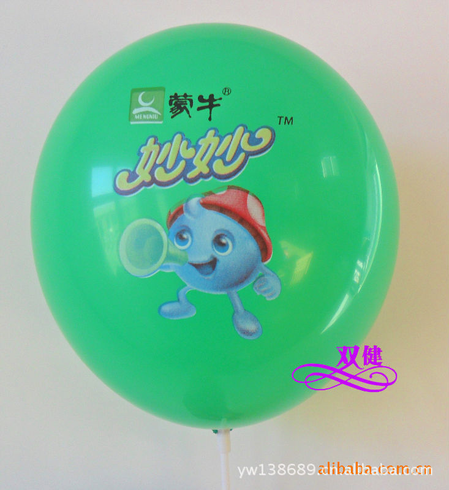

当使用“absolute”定位元素时，该元素就被看作一个矩形的覆盖物来格式化。这个矩形的覆盖物会凌驾于 其他任何文档原始布局之外放置。绝对定位的元素是独立的，它既与上级元素无关，也与子元素无关。同时， 它的准度和位置都不被加以考虑。因此，一个绝对定位的元素都是完全独立于其他内容的。如果在一个定位 元素中放置了一些文字，而在另外一个定位元素中放置了一张图片，那么就无法使文字环绕在图片的周围， 因为它们之间是相互独立的。
